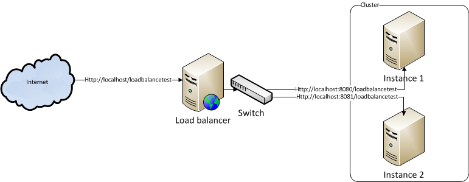
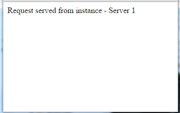
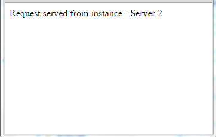

Introduction
Before going through this article we strongly recommend you to go through Load balancer article to understand the basic concept of load balancer.
Apache support load balancing through two modules i.e., mod_proxy and mod_jk. Use below comparison to choose the right module.
mod_proxy
- Comes by default with Apache web server
- Simple to configure
- This module is divided into mod_proxy_http, mod_proxy_ajp and mod_proxy_balancer sub modules
- mod_proxy_http is suitable to exchange encrypted information from httpd to web/application server. Supports HTTP and HTTPS protocols
- mod_proxy_ajp is suitable expose SSL information to web/application server. Supports only AJP protocol
- mod_proxy_balancer is suitable for clustering and load balancing. supports HTTP, HTTPS and AJP3 protocols
mod_jk
- mod_jk is mature, stable and extremely flexible. It is under active development by members of the Tomcat community
- Comes as a separate module. Hence we need to build, integrate and maintain the module
- Supports large packet size
- Supports advanced failure detection
- Uses AJP protocol and doesn't support encryption
- Suitable to use if SSL information exposed to web application
below sections tell you how to configure and use mod_proxy module
Usecase
Install the Apache httpd server ion port 80 and two instances of Tomcat under port 8080 and 8081. Both the Tomcat instances should install an application under context path of /loadbalancetest. Use direct tomcat URLs like http://localhost:8080/loadbalancetest to process the request through instance 1 on tomcat server and http://localhost:8081/loadbalancetest to process the request through instance 2.
Now, instead of using the actual tomcat URL use Apache HTTP server like http://localhost/loadbalancetest. Load balancer should route the request to instance 1 or instance 2 based on load balancer method.

Note - Multiple instances can run on the same server or different servers. we can use the server ip address instead of using localhost.
Environment setup
Apache
Download the binaries from the Apache web site and follow the instructions which are mentioned in the Apache web site to install.
Tomcat
This setup is optional. you can use any server which supports Servlet and JSP containers. If you want to use Tomcat, download the binaries and install it in two ports like 8080 and 8081.
Web application setup
- Install 2 or more tomcat instances in local system with different ports or install in two different remote systems
- Download the war file from link
- Open conf/context.xml file from a tomcat root directory of instance 1 and add below element
<Parameter name="instancename" value="Server 1" override="false/">
- Do the same for all other instances and give the instance name accordingly
- Start/restart all the instances
- Check the instances from the browser that all tomcat instances are up and running with the application. For example, to test the instance 1, open the browser and type http://localhost:8080/loadbalancetest (I installed instance 1 in 8080 port) and it should display the "Request served from instance - Server 1" message in the browser.
Configure load balancer
Let's start the load balancer configuration to route the request to one of the two instances based on the algorithm.
- Enable mod_proxy_balancer module
- Open Apache Http server root directory and open http.conf file from config folder. Use any text editor to open this file
- Search for the word "proxy_balancer_module" and see if the line is started with # (comment symbol). If it starts with # remove the # symbol and save the file
-
mod_proxy_balancer module depends on below modules. Make sure below modules are enabled in http.conf
file.
- mod_proxy
- mod_proxy_http
- mod_slotmem_shm
- mod_lbmethod_byrequests
-
Scroll down http.conf file till end of the file and place the below configuration.
<IfModule proxy_balancer_module> Include conf/extra/proxy-balancer.conf </IfModule>Here, I am creating a separate configuration file to define the load balancer. proxy-balancer.conf file holds the configuration of load balancer - Open config/extra folder from apache root folder and create proxy-balancer.conf file
-
open proxy-balancer.conf file by using any text editor and add below entries
<Proxy balancer://mycluster> BalancerMember http://127.0.0.1:8080 BalancerMember http://127.0.0.1:8081 </Proxy> ProxyPass /loadbalancetest balancer://mycluster/loadbalancetestIn bove script, mycluster is a name of the group. This can be anything and you can give the name as you wish. Directive BalancerMember is used to define the group member
- Start the Apache server. See logs/error.log file to troubleshoot
Test load balancing
Hence Apache httpd server contains a load balancer, I need to pass the request through a load balancer. Based on algorithm, load balancer will route the request to Server 1 or Server 2. To pass the request through load balancer open the browser and send a request to http://localhost/loadbalancetest URL.
In the first request load balancer will choose server1 and if you refresh the browser load balancer will send the request to server2.


Changing load balancer algorithm
mod_proxy_balancer supports three algorithms i.e.,
- byrequest
- bybusyness
- bytraffic
By default mod_proxy module uses byrequest algorithm. We can change this algorithm by using ProxySet directive. For example, use below script to change the algorithm to bytraffic.
<Proxy balancer://mycluster>
BalancerMember http://127.0.0.1:8080
BalancerMember http://127.0.0.1:8081
ProxySet lbmethod=bytraffic
</Proxy>
ProxyPass /loadbalancetest balancer://mycluster/loadbalancetest
Some times, based on server configuration we might need to define the load ratio or load factor to process the request. we can specify the load factor by using loadfactor attribute. For example,
<Proxy balancer://mycluster>
BalancerMember http://127.0.0.1:8080 loadfactor=2
BalancerMember http://127.0.0.1:8081 loadfactor=1
ProxySet lbmethod=bytraffic
</Proxy>
ProxyPass /loadbalancetest balancer://mycluster/loadbalancetest
Now open the browser and send the request to URL http://localhost/loadbalancetest. The request will be served from server 1. Refresh the browser, still it is server from server 1 only. If you refresh the request at 3rd time, the request will be server from server 2. loadfactor attribute value is the key to choose the server. As per above configuration request will be served in 2:1 ratio.
To know when to use which algorithm go through Load balancer artical
Session stickyness
Session stickiness is a technique which is used by load balancer to route the request from the same server which is served before. For example, let's say when you login into the system, the request is served by server 1. That mean your session details will be store in server 1. until you logout, your request need to serve from server 1 because your session is stored in server 1. if your request goes to server 2 and server 2 doesn't know about your login details, it will ask you to login again. To avoid this we can configure session stickyness in a load balancer. With this technique the load balancer will keep looking at previouly served server details. This approach has a concern that if the served server i.e., server 1 is down we will lose the session. we can solve this issue by using session replication. See the clustring artical to know more on session replication.
mod_proxy module maintains the session stickiness through cookies or URL encoding. Some load balancers will maintain the session even with client IP. If the client IP address is a dynamic like in DHCP environmnet, keeping IP address for session tracking is not a effective solution.
Setting the server information in cookie can be done at the application level or through load balancer without coding. But URL encoding should be done through backend application. Let see how to do session stikyness through cookies at load balancer.
- Enable mod_headers module in http.conf file(uncomment this module if it is commented)
- Update proxy-balancer.conf file with below details
Header add Set-Cookie "ROUTEID=.%{BALANCER_WORKER_ROUTE}e; path=/loadbalancetest" env=BALANCER_ROUTE_CHANGED <Proxy balancer://mycluster> BalancerMember http://127.0.0.1:8080 route=node1 BalancerMember http://127.0.0.1:8081 route=node2 ProxySet stickysession=ROUTEID </Proxy> ProxyPass /loadbalancetest balancer://mycluster/loadbalancetest
Where
- route=node1 and route=node2 are used to define the name of the server. we can give any name to the server. This name is used to identify the server.
- ProxySet stickysession=ROUTEID tells that which cookie need to be used to identify the session. Here I am using ROUTEID as a cookie name. You can define your own name but should match at line 1.
- Line 1 sets the cookie with cookie name as ROUTEID and value as server name i.e., node1 or node 2 for the path "/loadbalancetest"
- BALANCER_WORKER_ROUTE is a Apache environment variable which hold the server name i.e., node1 or node2 in this example
- BALANCER_ROUTE_CHANGED is a Apache environment variable which is used to identify that the user request is served by any server or the first time request. That means, this variable is used to identify that the cookie ROUTEID is present in the request. If this cookie is present, takes the cookie values and sends the request to server as per cookie values. If not present, as per load balancer algorithm it will assign to another server and creates the cookie with an appropriate server name as a value.
Now, once you add the sticyness details in configuration restart the server and hit http://localhost/loadbalancetest URL from the browser. If you see the cookie you should have a cookie with name as ROUTEID and value as .node1. That means the request is served through server 1 and if you keep on refresh the browser load balancer will route the request to the same server.
Setup backup/failover server
We can set up the backup/failover server. This server is also called as hot spare. Backup server will be served the request only if no primary servers are able to serve the request. Configuring hot spare is very simple, use status=+H attribute to server. For example, update proxy-loadbalncer.conf file as below and restart/reload the server
<Proxy balancer://mycluster> BalancerMember http://127.0.0.1:8080 BalancerMember http://127.0.0.1:8081 status=+H </Proxy> ProxyPass /loadbalancetest balancer://mycluster/loadbalancetest
Open the browser and give request to http://localhost/loadbalancetest. You will get the response from server 1. Even if you refresh the page n number of times, you will get the response only from server 1. Now make server 1 down and refresh the browser. You will start getting the response from server 2.
References
http://httpd.apache.org/docs/2.4/mod/mod_proxy_balancer.html